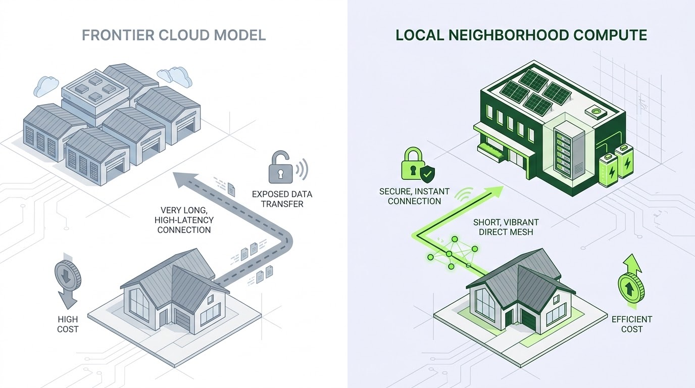

A local AI layer on the battery fleet: members get private AI, Base sells spare GPU time, the control tower keeps backup first.
Base is building the stations; a member AI service is our proposal.

IllustrationWhy this layer fits Base
Base already has the stations, members and crews
“Distributed Compute is Base’s program for deploying modular datacenters on top of our battery fleet, turning distributed energy sites into a distributed inference network.”
Base job posting, Network Engineer, Distributed Compute (Built In Austin); Base utilities page; Base home page
Members get AI that stays home
- Frontier AI
- Questions travel to a cloud data centre, each one billed, over the internet.
- Super Local AI
- Data stays home, one GPU-hour rate, and it keeps answering in an outage.
Laptop run, brain/LOCAL_VS_CLOUD.md
Compute earns more than power trading
50 homes over 3 real ERCOT days, GPUs busy 40% of the time.
python3 -m sim --nodes 50 --seed 7
From a member question to spare time sold
How we built it
- Answers at homePython sends the question and the right Base Brain notes to Ollama (gemma4:e4b) on the home PC. A one-line script installs it.brain/ask.py · scripts/install-local.sh
- The fleet and its rulesA fleet simulation runs 50 nodes over 3 real ERCOT days with the job rules, the 30% backup floor and the price pause.sim/fleet.py
- Try it in the browserWebLLM runs Qwen2.5-0.5B right in this browser on WebGPU, with no install.web/models.js · models.html
The fleet side, one card each
Stations and siting
Where a station could sit, from public library sites and city permits.
Topology
Stations on one feeder cover each other when one drops.
Job rules
Member questions first, work close to home, the grid price sets the pace.
Control tower
Every node, hour by hour, with a replay of the fleet run.
Economics
What the batteries earn together, with and without compute.
Sell spare time
Spare station time goes to local businesses after member questions.
Model registry
Which open models run where, with measured speed and accuracy.
Track 3 pitch
Ask a question and watch the station near you answer it.
Economics and reliability
Median answer from a small open model on a laptop: 14 of 16 member questions correct. A Jetson over the home network answered in 3.0 s.
A hub with 4 batteries and 4 GPUs, against $84.71 for one house with 1 battery and 1 GPU. GPUs busy 40% of the time.
50 homes over 3 real ERCOT days: power trading earns $142.14; compute adds $1,040.68 at 40% GPU use.
Every battery keeps 30% for the member's backup. Across the 3-day run the reserve held at every interval, on every node.
Three deep dives
Where a station could sit
Menchaca Road Branch library: within 1,500 m sit 428 addresses, 537 energy permits, 185 homes with solar and 27 with a battery.
Stations that cover each other
With two or more stations on a feeder such as 78745-f0, work moves over when one drops and 0 GPU-hours are lost. Simulation
What runs, and what always wins
Three kinds of work share a station: member questions, business inference, and open-science batch such as protein folding could run. The backup reserve always holds.